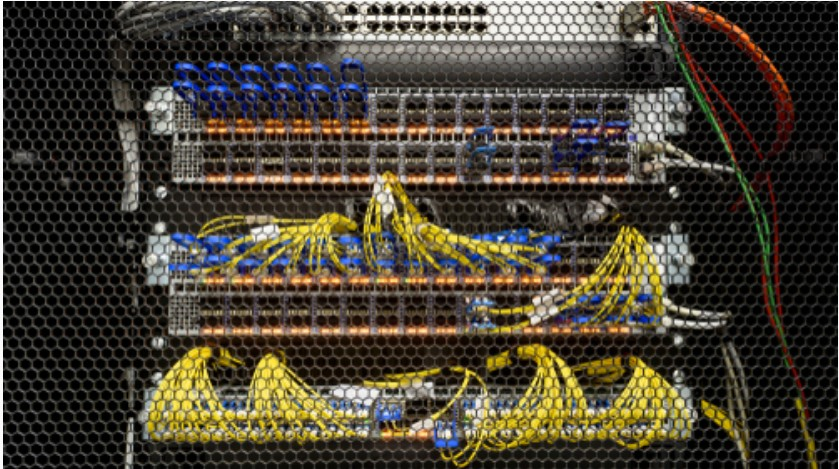

AI is no longer a luxury—it’s a competitive advantage. A technology consultant helps SMBs and mid-market
firms identify where automation, predictive analytics, and intelligent decision systems can create the
most impact—whether it’s streamlining workflows, improving customer experiences, or uncovering hidden
revenue opportunities. Without strategic guidance, AI projects can stall or misfire; with expert consulting,
they become scalable, ethical, and measurable growth engines.
Communications
In today’s hybrid business world, communication defines customer experience. A technology consultant ensures
your UCaaS or CCaaS solution is not just a tool, but a fully integrated strategy that connects employees,
clients, and data seamlessly. By optimizing call routing, analytics, and CRM integration, a consultant
transforms fragmented communication systems into a single, intelligent customer engagement platform—driving
productivity and satisfaction across the board.
Cyber Security
Cyber threats evolve daily, but most SMBs don’t have the resources to stay ahead. A technology consultant
bridges that gap—building layered security strategies, implementing best-practice frameworks, and ensuring
compliance with ever-tightening regulations. From employee training to advanced endpoint protection,
consultants protect your most valuable asset—your data—while maintaining business continuity and
customer trust.
Collaberation
Modern collaboration tools can supercharge innovation—or create chaos without alignment. A consultant helps
evaluate, deploy, and optimize platforms like Microsoft Teams, Slack, and Zoom so your teams stay connected,
not cluttered. The result is an ecosystem that boosts productivity, reduces friction, and aligns technology
with your company’s unique workflows, culture, and compliance needs.
Colocation
Collocation offers performance, scalability, and resilience—but only if it’s planned with precision. A
technology consultant ensures your move to a data center is cost-effective, compliant, and future-ready.
From negotiating vendor contracts to optimizing network topology and uptime, consultants help you leverage
enterprise-grade infrastructure without enterprise-level overhead.

Networking
Your network is the backbone of every digital initiative—but too often, it’s the bottleneck. A technology
consultant assesses, designs, and optimizes your infrastructure for speed, security, and scalability.
From SD-WAN and Wi-Fi 6 to network segmentation and monitoring, consultants future-proof your connectivity
so every application, device, and employee performs at their best.
DaaS
The modern workforce demands flexibility without compromising security. A technology consultant helps you
implement DaaS solutions that deliver virtual desktops anywhere, on any device, with centralized management
and compliance built in. This enables agility for remote teams, simplifies IT administration, and transforms
your desktop environment into a scalable, secure, and cost-predictable service.
Disaster Recovery
Downtime is costly—and preventable. A consultant ensures your disaster recovery strategy isn’t just
cloud-based, but business-aligned. By assessing recovery time objectives (RTOs), compliance risks, and
cost structures, a consultant designs resilient DR solutions that guarantee continuity and peace of mind,
no matter what disruptions occur.